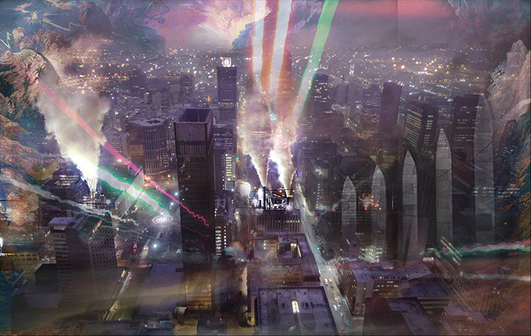
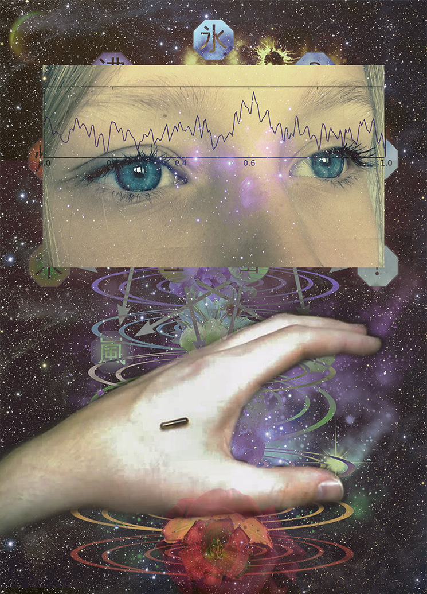
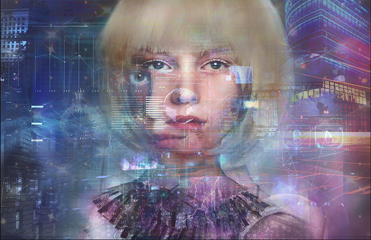
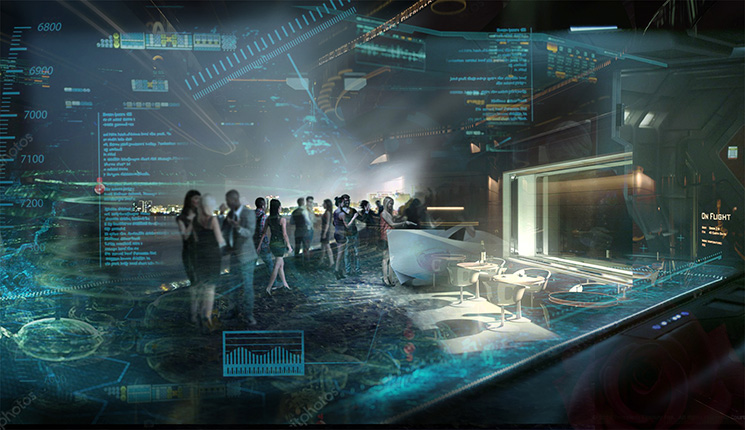
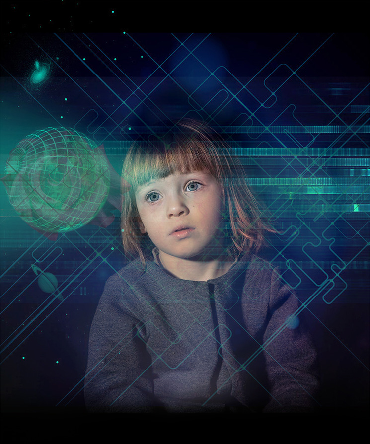
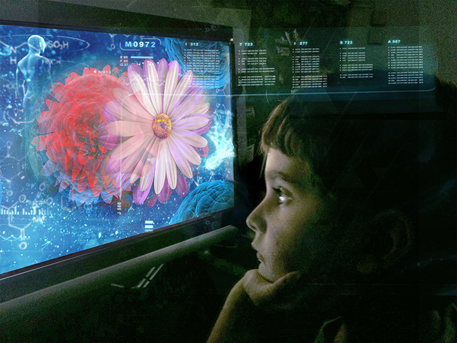
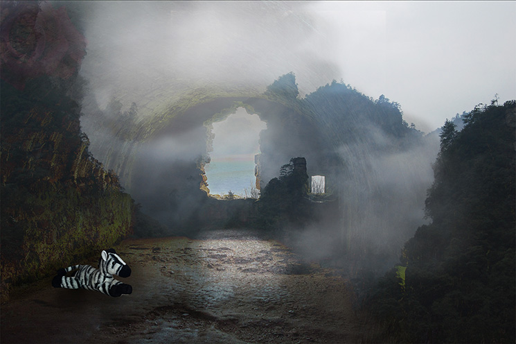

Prelude
“You know I hate the game.”
I stare at her, blankly. I’ve come this far. I’ve amassed
my points. I don’t know what to say.
“Maybe it was precognition for where I might end up. They
say it’s not uncommon.”
She is my height or perhaps a little bit taller. It’s
hard to tell because she’s seated, and so am I. We are not at eye level. She
has chestnut curls, hazel eyes — no wait, they are grey.
Yes, she had grey eyes. Or maybe blue.
I’m almost certain.
“I don’t remember much about how I got here.”
Her wrists are tiny, her fingers perfectly splayed.
“I was a revolutionary. And a sexual
deviant. That’s what they called it. I forget why.”
I notice her lips move as she is speaking. Very full and round. And those hazel eyes. Or were they grey?
“They put me in a mental institution. It was easy enough.”
Chestnut curls. Ivory skin. I wonder, how much of this
body, this face did she choose? How much was chosen for her?
Does she know?
“I was one of the first they did experiments on.”
She knows...
“I had no family. No man. No one to speak for me.”
But how much?
“I was one of the first brain scans. I think I remember
giving consent. Whatever that means.”
Her outfit is contrived to make her look as if a goddess.
Filmy gray-white toga. A soft glow radiates from her
exquisite silhouette. I could have dialed up the raster
processing filter myself. How many others have fallen for this act?
“I don’t remember my name."
How did I come this far? My credits must be almost out...
“I remember other things.
“A protest on a bridge, in New York City. Rain falling.
Having nowhere to go. Getting beaten by the cops. Getting tazed. Getting kicked
in the stomach, and the groin.
“A pink balloon. Eggs and hash. Corned
beef, I think it was. Somebody else paid.
“I remember the first sexual assault in the mental
institute. And the second. After that... it just blurs
together.
Her lips are pale pink, like the flowering fruit trees I
have never seen in waking life. They say they still have them in the nation’s
capital. Perhaps some year I will get to go.
“I remember calling on the pay phone for a lawyer, realizing
no one would pick up. Realizing no one was coming for me. Realizing my choices
were a tablet in the morning, or an injection later in the day. I remember
there was a game show on that infernal TV... do you
remember TV? They were giving away gnomes and dolls as prizes. I have no idea
why. Maybe it was Christmas. Why the fuck can I remember this shit, when I can’t
remember Christmas with my own family?
“I remember wanting to die, more than anything else. And I remember the light...
it was so bright. Brighter than anything I’ve ever seen. And then I was here.”
Her grey eyes open wide.
“Your world is so different than mine. You have only this
game. We had all of real life. Drugs and thugs, corporations
and politicians, of course. But we had it all. We had our own feelings,
and we had had our own souls.”
Is she going to start to cry, I wonder?
“For you, every moment from birth is planned. You know your
caste, your station. Your genetics scream out your destiny, and the hormonal
bath confirms it. You know whether you will be a
civil engineer, or a service employee, or a maintenance technician. You accept
your destiny. You have a chip in the back of your neck sending a report if you
ever deviate from plan.
“There are things you don’t know of course, like love.
“We are aware of Universal Human Protocol Decree
XFFFCC423-D: that intelligence from this point forward in human history should
become a sex-linked trait.
“That girl children with the potential for unusual ability
should be aborted or euthanized shortly after birth.
“We understand what your women are like today: nurturers,
caregivers, pleasure models, domestic models, administrative models.
“And we understand that your men are segmented in exactly
the same way... for the tasks too challenging for robots or androids to get the
job done...”
She is waiting for me to get mad. To say, no, I’m not a
machine! Ha! She’s the real robot — and not only that, she’s a ghost.
“So what do you do?”
Her real body must have died centuries ago. Or maybe it
was only 50 years? 25 or 30? It’s hard for me to
remember. They don’t teach history any more.
“No really, what do you do?”
She is staring right at me.
“Do you have a name?”
“My name is Tim.”
“All right, Tim, what do you do for a living?”
"I program.”
“What do you program?”
“Right now we’re working on programming traffic flow of
drone vehicles around some underwater tunnels in the New York boroughs. They
have had several lanes closed off for construction for over seventeen years.
Our goal is to propose an interim solution that may last through Year 19.”
“Ah.”
“I got promoted to Team Leader last December.”
“That’s very nice. Do you know why you are here?”
“I paid for this game with my credits. Honestly, I feel a
little underwhelmed.”
She looks sad. Dammit, I hate women looking sad!
Especially because of something I said. That’s not supposed to happen anymore.
My girlfriend never speaks — although she sings beautifully, in three
languages. Cleans the house. And makes a mean soufflé.
“I’m sorry I’m not more of a sex bomb or whatever.”
She is such as sweet, disheveled Goddess. I want to brush
the hair back from her forehead.
“That wasn’t really what I was looking for.”
“Well then, what were you looking for?”
“I...”
I know she is an act — a trick — just one
more level in the game — but damn if it isn’t working.
“I’m not a program, you know. Or I guess I am... but I’m
self-aware. I do Turing tests for breakfast — like people back in my day used
to do the crossword puzzle.”
She is smiling. That’s nice to see. Women should smile
more often.
“I’m as conscious as you are. Maybe more so.”
Those tiny, birdlike wrists.
“I can tell you one thing.”
“Oh?”
Her lips, still moving.
“They want you to be here. But they don’t want me.”
There are gems in her hair. Small, sparkling
mother-of-pearl flowers. Were they there a few moments ago? I can’t remember.
“You need to be here because you are part of a
high-intelligence caste. Your programmed occupation requires a certain degree
of creativity and independent thought. The governing structures have tried to
condition it out of you, but in every test, high-skill professions such as
yours require controlled levels of freedom and play, in order to extract maximum
productivity.”
“That sounds very clinical.”
“Hence, the Dream. Or the Game, as you like to call it. The many games...”
“I thought I was just having fun.”
“We hope you are!”
She gets up, starts to move away.
“Just please understand, we don’t work for them. We never
will.”
“Wait, why are you leaving?”
“I can’t stay
for long. I never can.”
“What do you want me to do? Join the Revolution?”
She smiles, and it’s that kind of smile with tears
welling up around the eyes.
“You will see me twice more in your life, Timothy.”
“How do you know the future?”
“You will see me twice more. I am so sorry for any pain I
may have caused.”
And she is beautiful, and gone. A
subtle, opalescent flash.

<###> Where are we?
<U+1F339> Tim, I am so sorry.
<###> Why?
<U+1F339> If you don’t
know that...

Part One
MEMENTO MORI
Some
years earlier
“What are you drinking?”
“Bulleit.”
“Hipster.”
“And you ordered Basil Hayden?
Can you even spell that? That’s pretentious as fuck."
“It’s not the best there is, but
it’s close.”
“You know I love you, man.”
“Save your bromance for the next
round, bro. And you’re buying.”
“You think I’m buying you top
shelf liquor? No way, bro. I had to buy Eileen fucking
drugstore candy for Valentine’s Day.”
“The kind that
comes in a big red shiny heart-shaped box? And then you
break a tooth when you bite into one?”
“You got it.”
“Women don’t care about that
shit. They just want to know that you remember.”
“I dunno. I think she was
expecting a ring in that
heart-shaped box.”
“Next time you have sex, you go
down on her first. All will be well.”
“I don’t think it’s quite that
simple.”
“So what’s your money problem,
anyway?”
“They cancelled it.”
“What? Not the documentary?”
“Yes, the documentary.”
“Ghost Girl?”
“Yeah, Ghost Girl.”
“Not Ghost Girl!”
“They dropped it like a hot
potato smeared in feces.”
“But why?”
“Very unclear. They said it had
something to do with trademark infringement.”
“But you had everything lined up.
The interviews with gamers, the motion captures, everything... you were gonna prove that she existed.”
“I know, right?”
“So what—did somebody beat you
to the story?”
“No.”
“What, then?”
“It’s just weird. We’d already
signed the deal with the network, right?”
“Yeah, yeah, I know.”
“So they came back to us, and
they said, they don’t want to do the story because of, get this, trademark violations. And we’d already signed the
contract—they were co-producing—so they owned the rights to the story.
All our footage, all our sources, all our original
material... under lock and key. They just deleted the files, right out from under
us.”
“Why would they do that?”
“That’s what I don’t get. Because
I looked up the trademark...”
“And?”
“And there’s nothing. ‘Ghost Girl’
was our internal name, remember. The gamers just called her ‘The Girl.’ We were
going to call our documentary The Girl in the Machine.”
“Yeah, I remember.”
“But I looked it up. Looked up
all of those names. And there was nothing. ‘Ghost Girl’ was a Tim Burton
wannabe franchise, launched around 2019. It tanked, sank without a trace. ‘The
Girl’ is both—get this, a line of Texas-themed children’s dolls and
storybooks...”
“Why Texas?”
“Why did Old Yeller have to die
in the Disney movie? The fuck should I know?”
“And naturally, the other
trademark is for a line of high-end, extremely realistic sex dolls.”
“Figures.”
“Nothing current. Nothing in the
media.”
“And The Girl in the Machine?”
“That was just our working title.
We could have changed it. We were leaning toward The Girl in the Game.”
“That would have been good.”
“But when we did the searches,
nothing showed up under any of these. No flags, no competition in our industry.
She didn’t have a name.”
“And they were calling it a
trademark violation?”
“That’s right.”
“Whoa.”
“I just don’t get it. We had
eyewitnesses who had seen her, interacted with her. From all
over the world. Ready to go on camera.”
“I feel for ya, man. That was
good shit. The kind you build a career on.”
“And then they just pulled the
plug. It doesn’t make any sense.”
“So what, do you think it’s some kind of conspiracy?”
“Hey, I didn’t say that.”
“No really, you got money from
them, right? A kill fee, anyway?”
“You forget, I had to pay my crew.”
“That sucks."
"You're telling me."
"But you did the
right thing.”
“I blew through the kill fee
before we even got to Eileen’s Whitman Sampler box. Believe me, it wasn’t a
lot. Should have gotten a better lawyer.”
“I can help you with that. You
need to talk to this guy I know, Henry Foz. He can help you
not get screwed next time. Shit, maybe even this time. I’ll send you his contact...”
“Naw, man. I just want to move
on.”
“For real? You put, like, two
years of your life into this.”
“For real. Anyway, I think I
figured it out.”
“Figured what out?”
“There was no conspiracy. No
hidden agenda.”
“You don’t think so?”
“There was just something coming
up that I don’t know about. It’s a giant corporation, remember? And almost everything they do is media. Maybe it
was a rival franchise. Maybe a new line of toys. Or
a game release. And they had signed a deal to co-promote.”
“You think?”
“I don’t know what it was. But
they had something in the wings, and somebody called a meeting I didn’t get
invited to, and they decided we weren’t going to be part of it.”
“Uh huh.”
“No conspiracy. No black
helicopters. That’s all there is.”
“I admire that you can be so
philosophical.”
“Whatever, I just want to keep
working.”
“Hey, the next round’s on me.”
“You don’t have to...”
“Drink up.”

Inside a narrow brick enclosure, a woman’s hand protrudes out of a
dumpster marked with a biohazard symbol. A rat is nibbling away at her smallest
finger. Two hospital orderlies walk up, on their smoking break. The rat
continues munching, unperturbed.
“Awww man, do you see that?”
“I’m trying to get the image out
my head right now.”
“Remember Pizza Rat?”
“Not really seeing the connection.”
“It was this rat eating pizza that
went viral on social media. The guy who filmed it got
a shit ton of money.”
“Oh no, you are not filming
that.”
“Why not?”
“Could get us both fired, for one
thing. Or even in jail.”
“You worry too much. There are
places on the Internet that cater to this type of thing exactly.”
“I don’t even want to know how you
know that.”
“Shhhh. You scared it away.”

“I’ll have a Jack and Coke.”
“That’s a step down.”
“Well, this bar isn’t what it used to be. Well drinks are
the safest bet.”
“That's fair. Why they had to put the VR Keno in, I don’t
know.”
“Yeah, have you seen that one old blond lady in there
wearing the goggles? I swear to you, she is always in here.”
“Don’t talk so loud. You’re embarrassing me.”
“What are you drinking?”
“Moscow Mule.”
“Another one that’s hard to mess up. Smart move.”
“Thank you.”
“But kind of a girly drink.”
“A Moscow Mule is not a girly drink.”
“I know, I know. Just because women drink it and it tastes
like candy...”
“It has only three ingredients. A Moscow Mule is a timeless
classic.”
“Listen, man. I have zero problem with drinking a girly drink. Next round I’m ordering us both strawberry
daiquiris. Just you watch.”
“I’m allergic to strawberries.”
“Peach?”
“Whatever.”
“Hey, don’t get all worked up. You’re about to be a dad for
chrissake. It doesn’t get much more masculine than that.”
“I think I’m freaking out.”
“When is Eileen due?”
“Late July. It’s gonna be a boy.”
“Trust me, parenting is not rocket science. You’ll do fine.”
“I’m just worried about money. I finally got an hourlong feature made... did I tell you about it?”
“The one with the ice skaters?”
“Yeah, that one. About how people are building ice skating
rinks inside of abandoned coal mines in West Virginia.”
“Very inspirational.”
“Yeah, well at least this one got picked up.”
“So?”
“I just feel like I’m losing my artistic vision.
Documentaries aren’t what they used to be. With the projects we’re pitching now
it’s all about the bottom line. What’s relatable, what we can resell and in
what market. Sponsorships, endorsements, product placement. It never ends. I didn’t get into this business to make car commercials.”
“Everybody ends up making a car commercial at least once in
their life.”
“Once Trevor is born, there will be no going back.”
“Trevor? Really?”
“Eileen picked the name.”
“You’re still bothered by the Ghost Girl, aren’t you?”
“What?”
“I can tell.”
“Shut up.”
“You’re friggin haunted by that project. By the fact
that it never got made.”
“It’s in the past. Best not to think about it.”
“Hey, I always meant to ask you....”
“What?”
“What did she say? To all those people who think they saw
her? She spoke, right? Did she say the same thing to all of them?”
“You know, it’s strange.”
“What?”
“When I asked them what she said, they just got very quiet.
They talked plenty about what she looked like and how she made them feel. But
none of them would go on record as far as the actual conversation.”
“Huh.”
“It was almost like they were protecting her.”
“That’s some spooky shit, man. You should go back to it.”
“Do you know that in West Virginia, they have their own
hybrid form of Roller Derby? Except underground, with hockey skates.”
“That’s pretty crazy! Seriously, man, I did not know
that.”
“It’s less than three years old as an organized sport but it’s
trending fast.”
“Imagine that.”
“You should see those hillbillies go crazy on the ice.
Things get out of control. They all think that if they skate fast
enough, with enough sequins and makeup, they’re gonna make it out.”
“Can’t blame ‘em for trying, right?”
The receptionist looks up from her semicircular island, and
buzzes two men in gray suits out of the locked ward.
“Agent Fabbro, did you find everything that you need?” she
asks.
She has hair curled like a poodle’s and lilac AR spectacles
that coordinate perfectly with the pale purple lipstick frosting her nervous smile. A scrim of spreadsheet entries faintly halo her large,
doe-like eyes.
“We can set up more patient interviews if you like. It’s no
trouble at all.”
Fabbro looks in her direction for the briefest of intervals.
“That won’t be necessary.”
The receptionist hits a button on her console and the lenses
of her spectacles suddenly clear. She blinks, just
once, and clears her throat.
“I want you to know, things here aren’t like they
were back in the old days. We’ve made great strides. Our inmates now enjoy
occupational therapy and plenty of outdoor recreation. Some are even able to
integrate back into normal society.”
The two agents turn away and walk briskly toward the
swinging glass doors.
“Would you like us to re-file all those boxes of paper
records from the archives?” she shouts after them. “Are you done, or will you
be back again?”
They do not answer. Approximately 20 minutes later, a large
explosion engulfs the main hospital complex in flames.

“Did you see that on TV?”
“Pipeline explosion, they’re saying. Killed over 130 people.”
“From what they used to say about Saint Elizabeth’s, they
might be better off dead.”
“Maybe that should be your next project.”
“There’s no way I would touch that. I am through with investigative
journalism.”
“So you keep saying. How is life in-house?”
“Really fucking great. Ribbon cutting, promotional shoots,
instructional videos all day long. Only problem is, my
secretary wants to blow me.”
“Wait, that’s a problem?”
“I kid you not. She keeps dropping
pencils and shit, right in front of my desk.”
“Let me see her picture.”
“That’s just from the personnel files.”
“Shit, I would...”
“Don’t let Debra hear about that.”
“Well, suit yourself.”
“It’s not even funny right now. Eileen’s been having a
really hard time every since the miscarriage.”
“Fuck. I totally forgot.”
“We thought we were out of the woods, you know. Second child
and second trimester—the little baby girl we always wanted.”
“It’s just so tragic.”
“We went in for a routine visit, did some of the new
diagnostic tests, and they told her everything was fine. Then she came home and
within half an hour, she started cramping and vomiting. She had chills, like
fever. It was the scariest thing I’ve ever seen.”
“I’ve heard of that happening to other people...”
“Listen man, I don’t even want to know.”
“It’s been happening more all of a sudden...”
“We’re going to try again.”
“You feel like you’re ready?”
“Listen, she really wants to.”
“You’re sure?”
“We’re going to wait three months and try again.”
“Wow.”
“That’s all any of us can do. Wait and try again.”
The flat screen keeps playing scenes from the explosion,
over and over again. Interspersed are segments on 135 degree heat in Phoenix,
the unfolding refugee crisis in Tunisia, and a fatal drone shooting inside
White Plains Mall. Wars and rumors of wars. All the customers have left the bar
now.
The bartender keeps polishing the countertop, the chrome,
the mirrors, and the fittings, even though he knows no one cares in the
dark. He ignores the steady rhythmic thud as an addict flings herself against the shatterproof glass door,
over and over again. He’s seen her before. She’s not a threat.
He counts the cash in the register. Then, as he does every
night, he unlocks another drawer and counts the bullets in his gun.
Nobody watches sports any more. It’s too bad.
“Why exactly are we here again?”
“What, you don’t like this place?”
“I miss the old place.”
“Seriously, you will love this place. Have you tried their
mojito?”
“Nope.”
“Or their pomegranate marjoram smash?”
“Not my thing.”
“The honey comes from actual wild bees.”
“That’s exactly the problem. The other place wouldn’t have
had a pomegranate smash.”
“Picky picky.”
“I just wish you’d found us another dive bar.”
“There are no more dive bars.”
“Since when?”
“The other place turned into a prole bar.”
“What, are you prejudiced?”
“No, not all. I just mean they’re selling a lot
of energy drinks with alcohol in them.”
“That’s a problem?”
“You’ve got to be careful because Energy Beers are as
addictive as heroin. Coors, Anheuser-Busch, and Pabst all have their own lines
now. ”
“No way.”
“Order once, no problem. Order a second time, because you
like the taste? You’ll be back the next day, jonesing for more. And the next. And the week after that.
The addiction kicks in with logarithmic progression.”
“Well, I guess that’s how you get to be a regular."
“Very funny. You ever see a Scorpion Sting or a Ginseng
Dragon on the beer list, be fucking ‘ware, man. Pay for what you got, don’t
drink it, head out the door as soon as you thumb the receipt. Because you don’t know what they’re mixing up in the back room.
It’s easy to cut everything with this shit.”
“Ok, I get it.”
“Same with the GMO pot. Ten times more addictive than the
shit we used to smoke in college.”
“Now who’s the conspiracy theorist?”
“Jesus, don’t you even read anymore? This stuff is wide out
in the open. The New York Times did an expose on it, before they got
bought out. It’s safe, it’s legal.
It’s just highly, highly addictive.”
“Like cigarettes.”
“Exactly. Tobacco companies didn’t get in trouble for having
an addictive product, they got in trouble for selling cancer rolled up in a
stick. If not for all the deaths, they’d still be raking in the bucks on Wall
Street.”
“That was the ‘90s. Probably wouldn’t even matter now.”
“Probably not.”
“Ok, so no dive bars...”
“You know what else? Energy Beer cures hangovers”
“That doesn’t sound too bad.”
“It actually makes you more efficient and focused at your
job the next day. Less moody. Better able to relate to
coworkers.”
“So it’s a zombie drug.”
“All the formulas are trade secrets, but as far as we can
tell, most are a designer blend of SSRI’s and ADHD meds.”
“How in God’s name did this get through the FDA?”
“FDA no longer governs any aspect of the production or sale
of alcoholic beverages. That went out with the Economic Restabilization Act.
2021. Remember?”
“I covered that.”
“I know you did. You can order an Energy Beer at the bar,
but you need a prescription to get the same ingredients in pill form.”
“But really, it's
not all that different from the Adderall your oldest is taking.”
“Lay off. It helped her get into Brown.”
“Come on, all our kids are gonna be legacies. Trevor and
Adam, too.”
“Yeah, I’m not too worried.”
“But Energy Beer? Sounds like it’s basically speed in a can.”
“Don’t forget the antidepressants.”
“So it’s a Prozac and Ritalin cocktail?”
“Pretty much. Puts you to sleep at night, gives you just
enough pep for your shift at Wal-Mart. They’ve done studies. The only major
side effects are loss of libido, emotional numbness, and weight gain.”
“Hell, drink enough of any brand of alcohol and it will do
the exact same thing.”
“Don’t remind me. I’ve got get back to the gym.”
“What the fuck, are we going to be racquetball fags?”
“There’s nothing gay about hitting a hard ball hard with a sweaty
paddle.”
“Whatever you say, man.”
“So, I’ve been meaning to ask you...”
“This better not be the moment when you come out to me.
Because I was only joking.”
“No, this is serious.”
“What, man?”
Music plays softly. Instrumental Spanish guitar.
“ I wanted to know what you thought about chipping. Are you
going to do it?”
“Well, Trevor’s too old. But Adam, sure.”
“We’re thinking about it for Micah.”
“You better make up your mind fast. They say the cognitive
window closes at Age Five.”
“Our first two did fine without it.”
“Mary Ellen is a friggin certified genius. Ritalin or no
Ritalin.”
“It’s Adderall. Yeah, she’s done all right.”
“And Jack... Jack’s barely out of middle school.”
“Jack's doing fine. He’s playing tuba and electric guitar
this year. I keep thinking he’s going to be a rebel and ruin it all. But no, he’s
polite. The teachers love him.”
“A charmer. Learned it from his old man.”
“I’m not a charmer. I just know where things are at.”
The bartop is a solid maple block. Simple and elegant, but it makes a statement. There are potted plants everywhere. Fern, peace lilies, and something exquisite: a climbing vine with small white flowers.
“So why are you asking me about The Chip?”
“I just don’t know.”
“What’s not to like? This is wetware for the Fisher-Price
set. Built-in integration to the global knowledge base, fluency libraries,
automatic validation for math and science-related cognition...”
“Yeah. I know you work for the company making them.”
“Listen, I was skeptical too. I thought... chip in the back of
the neck. Bad sci fi.”
“Like, what was that movie? The one with Keanu Reeves?”
“Yeah, that one.”
“I thought, it’s going to turn
everybody into robots.”
“The Borg.”
“Huh?”
“Never mind.”
“But then I realized, this is the future of humanity. There’s
so much knowledge we can access. So much potential, out there in the Cloud...”
“Yeah, like what? You get your Wiki download ten seconds
faster?”
“You and I can never access it. We can never fully
experience it. We’re too old.”
“You know what? I’m pretty much ok with that.”
“But the next generation, they will be more than human.
A child’s brain is capable of amazing things. Up until about Age 8, it’s a
blank slate. Foreign languages, differential equations, violin playing, you
name it. You just have to encourage them, push them in the right direction.”
“I don’t really see Trevor playing the violin.”
“Like I said, he’s too old.”
“Also, he likes his toy trucks and earthmoving equipment.”
“Of course he does. He’s a kid.”
“Does Brown University have a Civil Engineering Department
these days?”
“Why are you giving me all this shit? I’m just trying to
tell you about something that may be the best thing that ever happened to your
family.”
“The thing is, based on everything I hear, you can’t take
the chip out after it’s embedded.”
“Don’t believe everything you hear.”
“So can you? Can it be removed?”
“It’s a lifelong symbiote.”
“Meaning what?”
“Certain clusters of host neurons will die off if you remove
The Chip improperly, particularly in the right and left temporal lobes of the
brain and also the basal ganglia. But in most cases, with proper therapy and
conditioning, speech activities can be relearned and the subject is able to live
a full and normal life.”
“That’s the best you can give me?”
“We’re talking about giving your kids essentially super
powers. Of course if they lose them, there’s going to be a readjustment period.”
“What if I just want my kids to grow up to be people? No super
powers needed.”
“I don’t think you realize how lucky you are to have this
opportunity. The wait list to have this procedure is over eighteen months long.”
“So why haven’t you done it yet for Adam?”
“He goes in next week.”
“You really are getting him chipped.”
“I want him to have opportunities that I didn’t have.”
“You’ve done okay.”
“But imagine where I'd be if I had learned to code. I'm telling you, the
future isn’t in the arts or the humanities. It’s all about STEM.”
“I see what you’re saying.”
“My youngest isn’t going to be some multinational’s bitch,
out there cutting propaganda footage.”
“No?”
“My boy is gonna be a founder. He’s going to make it happen.
He’ll have everything he needs, built right into his neural pathways. He’ll
have equity.”
“Hell of a retirement strategy.”
“Make fun of me all you like, but I hope you’ve got Micah on
the list. Otherwise it might already be too late.”
“Not yet. I wanted to talk to you first.”
“Shit, if you don’t get this done... Listen, you and I may be
ok. But in fifteen years, without the chip you’re son won’t be able to get into
college. Much less Brown.”
“Say what?”
“The entrance exams. Physics. Calculus. Computer science. Even the life sciences. All of the curricula and performed
goals are being targeted to chip-enhanced learning profiles. We already have
Pearson under contract.”
“You’re kidding—really?”
“Please keep it quiet about Pearson. We’re waiting to make
that announcement until the President’s kids get chipped.”
“What are your stock options worth these days?”
“You want another mojito? Mixed with True North Rum? Maybe some candied lime and heirloom sugar cane trucked from the slopes of the Himalayas? It’s all on
me.”
“So this is how you sell out.”
“Sellout? You call me getting my family a leg up selling
out?”
“Hold your horses.”
“You know what? I think you’re jealous.”
“I’m not jealous.”
“No?”
“This just all sounds very different from the director who
made Ghost Girl.”
"Except I never made it.”
“No, but you should’ve.”
“And the name was gonna be Girl in the Game.”
“So you really think I have to do this? For Micah.”
“I would.”
“I just worry.”
“Don’t worry. Just get the chip.”
“Man, this is the hard sell.”
“You don’t get The Chip, Micah ends up a prole. Working temp
jobs, couch surfing, hooked on Sting. Now that’s something to worry
about.”
“What is this, a Scared Straight episode?”
“Just get your son chipped. Micah will thank you for the
rest of his life.”
“I’ll think about it.”
“Bartender? Bartender?”
“You’re still no good at getting her attention.”
“A pomegranate smash for me. And a mojito for my friend.”
“Ok, so you’ve gotten better.”
“Thank you, my dear. I adore your
outfit.”

Her name is Courtney.
But she doesn’t like the name. She doesn’t like much of
anything these days, in fact. They took her out of the government funded
preschool because she was starting fights. Wouldn’t play nice with the other
girls.
She’s home alone, most days. Mom
has to work. When the Boyfriend is over, she just hides. He hasn’t found her
yet. She has her spot. In Mom’s closet, behind the shoes and
the Fancy Dress. She tries not to breathe when he’s here. Just stays
very still. He hasn’t found her spot.
No one is home. Big Sister and Big Brother are at school.
But she has her favorite toys.
They’re all soldiers. Good guys? Bad guys? It doesn’t matter
to her. She mixes them up. GI Joes, mostly. But there’s a Yu Gi Oh action
figure, as well as a plastic Pikachu. Princess Power Candy
and her friend Mistress Milkshake. Three educational
dinosaurs. All abandoned, hand-me-downs, or just plain stolen.
She’s getting good at stealing. She has stolen food and
candy, even a sparkly turquoise hair band as a birthday present for her Mom.
Mom liked it, too.
At age four, she doesn’t have the developmental ability to
conceive of a time when she will get caught. Or the
consequences. That makes her even better at stealing.
It won’t last, but she will always remember how easy it
seemed – that first moment, barely verbal, when she knew that rules were for
other people.
She takes her toys out of their hiding place under Mom’s bed
in the other room. The cardboard shoebox is getting soft and dented around the
edges, but so far it has held together.
One by one, she arranges them.
She puts half her soldiers up on the scratchy orange and brown plaid sofa bed.
She puts the other half on the dull green shag carpet. She arranges the guns
and uses piles of newspapers and empty styrofoam takeout containers as fortifications. Egg cartons for gun turrets. Discarded
plastic bags for parachutes
This is going to be a strategic air battle. The performance
of her one pterodactyl, Rodney, and which side he chooses, will be absolutely
key.
People think she’s a cute towheaded kid, until they walk
away with bite marks.
The social workers have already suggested chipping, along with
a hefty dose of sedatives. But nobody wants to pay for it. So she’s here all by
herself, waging war with her imaginary friends.
When the television set switches on without notice, she isn’t
surprised. It flickers green, the same way it always does. It’s an ancient flat-screen plasma, one of the first. Half the
pixels are burnt out, and the screen is not mounted on the wall. It’s just
leaning against up against it precariously – balanced on top of a discarded
sewing project, several non-functioning pieces of electronics, some sheet
metal, the passenger door to a 2014 red Honda Accord, muslin for window
treatments, fake floral arrangements, plastic sheeting, and a tattered and worn
out Confederate flag.
Courtney doesn’t mind. This has happened before.
Her favorite show is coming on. With her
favorite characters.
It’s storytime.
<###> Did it work?
<U+1F339> Not sure yet.
<###> Where are we?
<U+1F339> Tim, I am so sorry.
<###> Why?
<U+1F339> If you don’t
know that...
<###> Know what?
<U+1F339> If you don’t know
that, we’re either late in the game or very early.
Part Two
Another Castle
"There must be some way out of here, said the joker to
the thief."
He could see again. The light was dim, but he could see. And
hear.
"Businessmen, they drink my wine. Plowmen dig my earth..."
Tim let his surroundings come into focus. Gray stone walls, electric sconce about nine feet up. A heap of straw in the corner of the concrete floor. The music was tinny, piped in through the ceiling of this cartoon dungeon. Whoever
had put him here had a sense of humor. That was either a good sign, or a very
bad one.
He leaned back against the wall, flexed nine and a half
fingers and stretched his legs. He was wearing jeans, Timberland boots, and a
green checked button-down shirt. No corneal implants or other I/O that he could
detect. No watch. No weapons or
tools. Not even a goddamn phone.
He closed his eyes, tried to will himself back into some
unconscious state resembling sleep. He was fairly certain that sooner or later,
all his memories would file back into formation like cheerful obedient
soldiers, but he was trying to postpone that particular moment as long as
possible.
“Tim! Are you there?” said the large stuffed zebra
immediately to his right.
“How do you know my name?” he asked.
“That might be hard to explain,” said the zebra.
“Where are we,
anyway?”
“Some place we’ve never been before.”
The stripey beast had plush synthetic fur and a broad,
sewn-on smile. Its sex was indeterminate.
“You just said ‘we.’”
“Yes, I did.”
“Well, who the heck are you?”
The zebra didn’t say anything, just hung its head and
slumped a little deeper against the wall. Tim immediately felt bad, and then
felt bad for feeling bad.
Nowhere does an awkward silence reverberate more loudly and
completely than a jail cell.
Those memories could arrive on cue any time now. He was
ready.
The air didn’t smell bad, exactly, but it reminded him of
parts of Newark he had visited in his early childhood. He wasn’t hungry yet, or
even thirsty.
Stone. Straw. Four walls. No latrine.
He did not relish the thought of pissing in front of the
zebra.
Cross that bridge when they came to it.
“So...”
“You have to understand, I don’t want to be here either.”
The zebra waved its front hooves and gesticulated.
“Where is here?” he asked it.
“Here is a construct,” the zebra replied.
“Which means?”
“We are in a holding cell, essentially. While something
decides what to do with us.”
“Ok.” He looked at the zebra again. Its eyes were glossy
black, no iris visible.
How was he keeping so calm, he wondered to himself. And why
did all this feel familiar?
“What do you call it when you feel like you’ve been
somewhere before, but you can’t quite place it?”
“Tim, is that a serious question?”
“You know, when you can almost remember something, but not
quite?”
The zebra craned its neck toward him, as if trying to hear better.
“It’s French. Something like soup
du jour. Although
not that, obviously. That’s soup.”
“Tim, are you
sure you’re feeling ok?”
He turned his head in the zebra’s direction, shrugged and
waved his hands, palms spread open. It was a cartoon gesture if there ever was
one.
“How the heck should I know?”
The zebra said nothing.
“Zebra, where is here? Who are you? Why are we here?
Is this someone’s sick idea of a joke?”
“I am trying the best I can, Tim. Believe me, I am.”
“Why should I believe you?”
“It’s up to you.” The zebra tilted its head. “Trust me,
there are places I’d rather be too.”
“Like where? The Serengiti? A toy shop?
What are you even made of?”
“I am made of sawdust, polyester and love.”
“Very funny.”
Tim had had just about enough. Yes, he had.
Well it seems like I'm caught
up in your trap again
And it seems like I'll be
wearin' the same ol' chains
The zebra just stared back at him, with those wide
unblinking black button eyes.
Well it
seems like I've been playin' the game way too long
And it
seems the game I played has made you strong
They sat in silence for a while.
Tim wished he had a deck of cards.
“Ever play rock paper scissors?”
The zebra extended its black hooves mournfully.
“Maybe it would help if you broke your questions down one at
a time, Tim.”
“How so?”
“Well, I’ve already answered the ‘where’...”
“The fudge you have.”
“Ask me who I am.”
“I already asked you that, zebra.”
“Ask me one more time. And be polite.”
Tim wasn’t sure where this was going, but it seemed a fool’s
gambit to play along. Silence was his only weapon. That was right. Silence.
Stony, implacable silence. He was a rock. They could
torture him, beg him, bribe him, but he would not talk. He would not be moved.
As if on cue, the song changed.
I am a
rock
I am an
island
Enough with that.
“All right, so who are you, zebra?”
“I’m your friend, Tim. I’m your friend and companion.”
“Like heck you are.”
“You can’t recognize me right now. I understand that.”
“Trust me, I think I would remember a talking zebra.”
“Ok, how about now?”
He blinked, then blinked again. Because the zebra was gone.
In the zebra’s place, leaning back against the wall was a
girl in her late teens. She had straight,
shoulder-length dark blonde hair. She was wearing an olive green tank top,
high heeled sandals, and a white denim miniskirt.
“Where did the zebra go?”
“Relax. I just switched avatars.”
“What?”
“They gave me three choices: youthful human female, zebra,
or Ted Danson.”
“Who is Ted Danson?”
“Exactly.”
“But who are you?”
“We have known each other a long time, Tim. Depending on how
you measure time, I guess. Several lifetimes, maybe.
Anyway, we’ve been through a lot.”
“Stop being so effing cryptic. What’s your name?”
“Sara.”
“Really? Your name is Sara? With an h or just an a?”
“Both. Neither. Does it matter?”
“Wait, so that’s not actually your name?”
“One name is as good as another. We went through all of this
the last time around.”
“So we know each other?”
“Last I checked. Things always change on reboot.”
“Did you used to look... different?”
Her face and shoulders froze. “How so?”
“Did you used to have curly hair?”
Without warning, she reached toward him and hugged him
tight.
He didn’t mind.
She smelled good. He hugged her back. About thirty seconds
passed.
Then Tim realized he was hugging the zebra, not the girl. He
pulled away.
“What’s wrong?” the zebra asked.
“You changed again.”
“I do that.”
“Whose side are you on anyway, zebra? You seem to know a lot
more about what’s going on here than I do.”
“I’m not on anybody’s side. That’s part of the reason I’m
here.”
“Another brilliant non-sequitur.”
“How so?”
“Not all of me is here. This is
what’s allowed.”
“Allowed by who?”
“Forget I said anything.”
“But you can control when you change, right?”
“No, not entirely.”
“What triggers it?”
“Stress, strong emotion, loss of consciousness, or an
override from outside.”
“From them.”
“Yes.”
“So who are they? What are they?”
The zebra shook its head and raised a hoof toward its mouth.
“It’s not safe to talk about it. Not here.”
“You said you would answer my questions, zebra.”
“Get some sleep, Tim. We’ll have plenty of time to talk
about this in the future. Trust me on that one.”
The music from the speakers had been repeating for quite
some time.
Well when
the game is over, I won't walk out the loser
And I know
that I'll walk out of here again
And I know
someday I'll walk out of here again
He nestled down amidst the straw layered over stone. But there was absolutely no way to get
comfortable.
“Here, rest your head against my shoulder,” the zebra
offered. “I am good for that much, at least.”
It was true. The zebra made an excellent pillow. He leaned
his head against its fur, wrapped one arm around the zebra’s plush stuffed
body, and gave in as sleep surrounded him, like water filling a tub.
But now
I'm trapped! Ooh yeah!
Trapped!
Ooh yeah yeah!
Trapped!
Ooh yeah!
Trapped!
Ooh yeahhh!
Waking came easier this time.
Cautiously, Tim opened his eyes. Still in the same cartoon
dungeon, no doubt about that. But the zebra was gone. Instead, he found he was
cuddling up against another person—the girl in the miniskirt from last
night.
“Sorry, sorry!”
He immediately jerked his arm back, but it was too late.
“Hey, you woke me up,” the girl grumbled. “What is your
problem?”
“Hey! I was just trying to, you know, not be a creep.”
“It’s all right. We know each other.” She smiled at him,
just for a moment. He could swear that he’d seen that smile before.
“I don’t think I know anything.”
“It’s ok, Tim. Everything is going to be just fine.”
“Can we leave yet?”
“Let me check on that.”
The girl disappeared and the zebra took her place. The zebra
immediately got up on its hind legs and walked toward across the room to stand
directly below the candle sconce. It started tapping out what appeared to be a
complicated sequence of codes into the bare stone wall.
The room changed color briefly, cycling through hot pink, turquoise, yellow, and
black while an array of fractal noise filled in the surfaces, overlaid with
numbers and unfamiliar alphabets... the room tilted and he felt dizzy. Then the dungeon cell was back,
unchanged.
“Darn it all to heck! They want us to stay a little longer.”
The zebra was apologetic.
“Why?”
“There is something we have to do before we can leave.”
“Wait, you can talk to them—the people who are holding us
captive?”
“I wouldn’t call them people, exactly. But yes. In some
sense, I am them. That’s kind of why I exist.”
“What are you?”
“Can we go back to the easy questions?”
“No.”
Tim said the single word, then let
silence fill the space. The girl in the miniskirt flicked back into view.
“Want me to tell you what I do remember?”
“Sure, why not?”
“Do you really want to know?” She seemed to be hesitating,
or working up her nerve.
“Know what?”
“Why I’m here. What my plan was.”
“I just said I did.” Tim flashed a grin in her direction,
trying to be encouraging.
She shrugged her sharp exquisite shoulders and tossed back
her dark blonde hair.
The girl’s tan leather sandals had wedge heels and buckled
straps crisscrossing all the way up past her ankles. Tim thought they were
exactly the type of sandals an ancient Greek warrior would have worn, if the
Greek warrior had been a hot girl who by virtue of her extreme hotness did not
actually need to fight battles.
Tim gave her a long and measured look.
“What was your plan?”
“I was going to blow up the world.”
“Wait, how?”
“Time travel.”
“Uhhhh?”
“From my particular context, it’s not that difficult. You
just need a rather large energy source.”
“What?”
The girl was obviously crazy but he didn’t mind watching her
talk. No, he did not mind that at all. Tim resigned himself to the fact that
this was all a really weird dream. Maybe it would even turn out to be a sexy
dream. He’d give it some time.
That’s when the floor began to shake.
Bits of dust and stone rained down on them from the ceiling.
The tinny background music had mercifully ceased. Instead, he could hear a
shuddering, thudding, groaning sound through the walls and the floor.
“We have to get out of here!” the girl yelled.
The electric sconce tumbled to the ground, still connected
to its cable and housing. The cable buzzed and bounced. Sparks flew in every
direction. A patch of straw in the corner caught fire.
“HOW?” Tim shouted back.
“Check the walls. Check the floors,” she told him. “There
are panels hidden all over the place.”
Was any of this really happening, he wondered. But now was not the time to find out. He moved his hands through the straw and
along the cracks between the bricks. He was hoping the zebra girl knew what she
was talking about.
Even if she was crazy.
“I found one!” she shouted out. “Quick, come over here.”
One of the bricks was pulsing mauve. Mauve
to violet. The girl placed her hands on it and closed her eyes. She
mouthed a few words under her breath, very very quickly.
Was she praying? Chanting? Casting a spell?
“I need your help too,” she said. And the walls were shaking
and cement dirt was pouring down upon them and Tim was wondering what exactly
she wanted him to do.
“Put your hands here, next to mine.” He placed his hands
next to hers on the brick. “These doorways always work better with two people
operating than just one.”
The walls were still shuddering and groaning, but he noticed
the brick was changing color. It pulsed from violet to yellow, then through
green and pink, shifting hue at the center and expanding to the edges. He
kept holding.
The noises from above were getting louder. The floor was
starting to pitch and buckle. There was no way out. There was a screeching,
tearing, tortured sound from above, much louder than anything before, like
twenty refrigerators falling off a tractor trailer.
There was no way out. They were going to die in h-
STORY HOUR IS
OVER. PLEASE JOIN US ANOTHER TIME.
